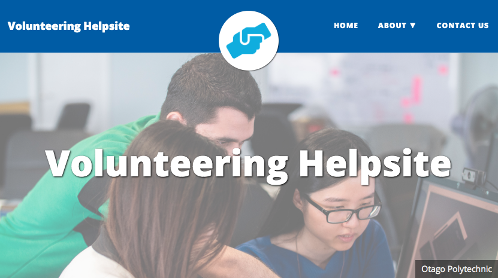

George Alexander
Hi, I'm George. I'm a Dunedin based front-end developer and designer with a solid amount of backend experience. I am currently completing my final semester in a Bachelor of Information Technology at Otago Polytechnic.
I'm fluent in CSS and HTML with substantial experience developing websites using JavaScript, jQuery, PHP and static site generators such as Hugo and Jekyll. I build sites with WordPress and Squarespace, too.
Besides building websites, I have strong experience in UI/UX design and Graphic design having several years experience with tools such as the Adobe Suite and Sketch.
Current Projects
Below are several of my third year projects which I will have completed by the end of semester.
Volunteering help site using Hugo and Markdown
I'm currently in the process of building a help site for senior members of the Dunedin community. This is all part of my final project and will run in sync with the BIT's community volunteering program. The website will consist of tech related modules, targeting older generations and at a high level, aim to solve some of the more menial issues that might occur when using modern technology.
Hosting a non profit site for free with Jekyll and GitHub and CloudCannon
I've been working closesly with Grant from Theta, a non profit organisation delivering applied theatre-based programmes on health related issues to youth in mainstream schools and alternative education. I'm currently in the process of building a Jekyll theme that will be hosted on GitHub and use CloudCannon as a CMS. The objective of this project is to remove the one off fees that occur when using an agency and leave Theta less out of pocket while still having full control of their content.
View documentation hereRecent Work
Here is some recent work I've done for clients.
Bradley Nuttall Otago Limited
Launch Site
Jumping Jimmy's Castle Hire
Launch Site
Cosy Dell Tennis Club
Launch SiteExperience
Digital Communications Intern
AbacusBio are international leaders in Agribusiness consulting. At AbacusBio I was tasked with optimising digital communications around products and services.
Some of which included but was not limited to:
- Designing new logos across their product range.
- Designing a new interface for the AniCloud web application.
- Branding and application components for the AniCapture mobile application.
- Creating a series of support videos for the AniCloud web application.
- Creating a brand guideline brochure to help strengthen brand identity and vision.
- Creating a social media guideline brochure to highlight what should be posted on various platforms.
Freelance Web Developer & Designer
I've worked with a number of clients across various industries having designed a variety of different websites ranging from static front end based websites to content management systems in WordPress and SquareSpace.